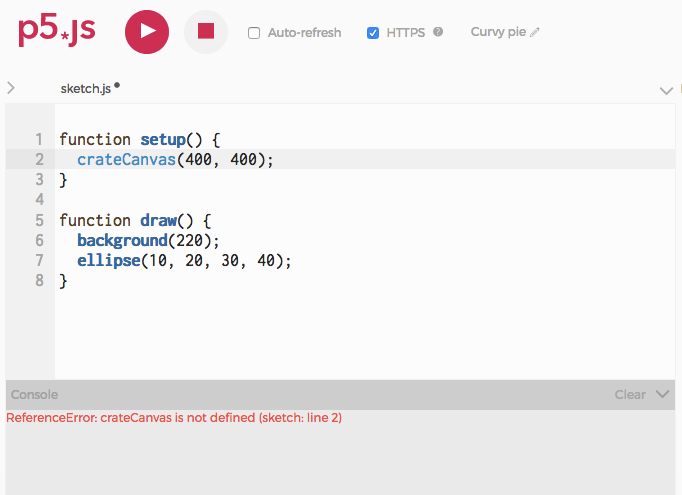
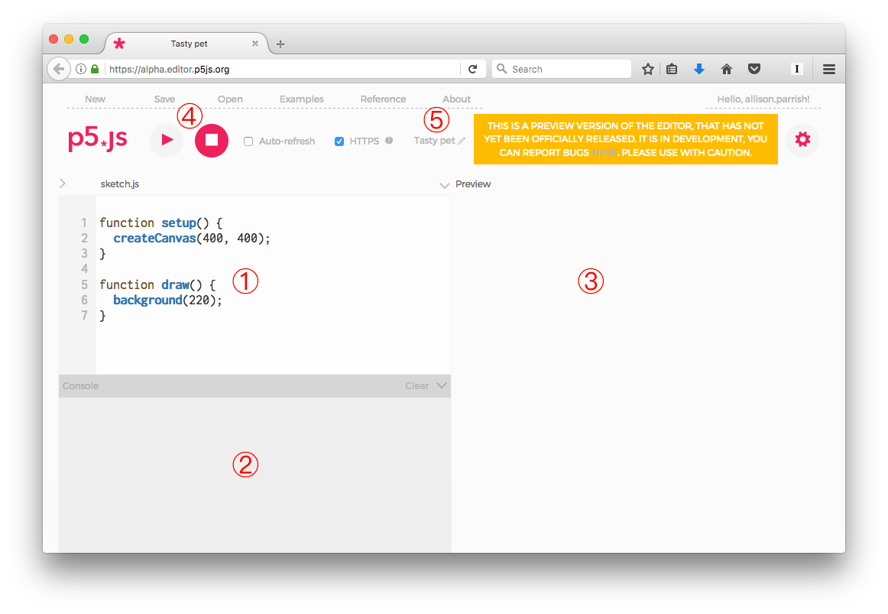

De eerste stappen in p5.js
Deze site is grotendeels een vertaling van een tutorial van Allison Parrish en is vertaald en bewerkt door Marijn van der Meer voor het gebruik bij Informatica lessen op het IJburg College en het Montessori Lyceum Amsterdam
Deze tutorial zal je door de eerste stappen helpen die nodig zijn om je eerste
p5.js schets te maken.
BELANGRIJK: (leren) programmeren is doorzetten, fouten maken, zoeken waar de fout zit en fouten oplossen. Dit kost tijd, frustratie, doorzettingsvermogen en uiteindelijk als het lukt... voldoening, trots gevoel en blijdschap. Dus ga aan de slag op je eigen manier. Door te lezen, gewoon uitproberen of filmpjes te kijken. Maar zet door en leer vooral van je fouten. Denk eraan: er is geen app op je iPad geschreven zonder dit alles, ook bij ervaren programmeurs lukt niks in 1 keer!
Wat is p5.js?
p5.js is een Javascript library (een library is min of meer een verzameling van functies, opdrachten voor de computer) en daarmee geeft het je een aantal gereedschappen om het makkelijker te maken om de Javascript programmeertaal te gebruiken om creatief te coderen. Het is gebaseerd op Processing, een creatieve programmeer omgeving die oorspronkelijk ontwikkeld is door Ben Fry and Casey Reas. Een van de belangrijkste doelen van Processing (en projecten gebaseerd op Processing) is om het makkelijker te maken voor beginners om programmeren te leren voor specifiek interactieve en grafische programma's (terwijl het ook zeer krachtige en mooie tools geeft voor experts).
Het voordeel van het gebruiken van Javascript is dat het op vrijwel iedere computer werkt en ondersteund wordt: iedere webbrowser heeft een Javascript interpreter ingebouwd, wat betekent dat p5.js programma's in vrijwel iedere browser uitgevoerd kunnen worden. Bovendien is Javascript taal vastgesteld door een internationale standaard en zijn de meeste Javascript interpreters (inclusief die in je webbrowser), open source en vrij beschikbaar. Niemand 'bezit' Javascript en iedereen kan het gratis gebruiken.
Een ander belangrijk idee achter Processing is dat het heel makkelijk zou moeten zijn voor programmeurs om software prototypes snel te kunnen maken, om nieuwe ideeën uit te proberen om te zien of het werkt. Om deze reden hebben de bedenkers de Processing (en p5.js) programma's 'sketches' (schetsen) genoemd. Een benaming die we hier zullen aanhouden.
Je eerste sketch
Ok, klaar met de eerste uitleg! Laten we gaan programmeren. Klik eens op de 'play' knop hieronder.
Gefeliciteerd! Je hebt je eerste p5.js code laten uitvoeren.
Wat gebeurt er nu in deze code?
Je hebt een computer programma laten draaien, maar wat gebeurde er? Hier is een uitleg (een beetje versimpeld):
ellipse(50, 50, 60, 60);is een voorbeeld van een function call. p5.js heeft verschillende ingebouwde 'functies' die verschillende taken kunnen uitvoeren, zoals bijvoorbeeld vormen op het scherm tekenen of getallen uitrekenen met wiskundige formules. Het leren programmeren in p5.js is voornamelijk het leren gebruiken van deze commando's en ontdekken wat ze doen. Deellipsefunctie tekent een ellips op het scherm, als je dat niet al geraden had.ellipseis de naam van de functie. Functienamen worden altijd direct gevolgd door twee haakjes; tussen deze haakjes kunnen (en soms moeten) een of meerdere waardes, gescheiden door komma's. Deze waardes heten de parameters van een functie. Iedere functie gebruikt de parameters op een iets andere manier en je moet dus ontdekken of opzoeken wat de parameters van een functie betekenen.- Bij de
ellipse, is de eerste parameter de X-coördinaat van de ellips, de tweede parameter de Y-coördinaat, de derde parameter de breedte van de ellips en de laatste parameter de hoogte van de ellips. Verander deze waarden maar eens een beetje om te zien wat het doet en klik dan nog eens op Play. - Het aanroepen van een functie eindigt in Javascript altijd met een puntkomma (
;). Je moet altijd een puntkomma aan het eind van iedere functie-call (aanroep) zetten. - Je kan zo veel functies aanroepen als je wilt tussen de regel
function draw() {en de regel met}die daarop volgt (de ruimte tussen de accolades heet een blok). Later zullen we het hebben over watfunction draw()precies betekent, of wat de accolades (curly brackets) betekenen. Nu is het alleen van belang dat je begrijpt dat je meer functies kan schrijven tussen deze accolades als je wilt dat er meer gebeurt.
Je kan een enorme lijst met alle p5.js functies vinden op de p5.js referentiepagina (Iedere programmeertaal heeft ergens een referentielijst staan met de ingebouwde functies). Voor nu gaan we alleen nog aan de slag met de meest simpele functies die vormen op het scherm tekenen. Als we verder komen zullen we ook andere functies gaan gebruiken die meer interessante dingen kunnen.
Vormen toevoegen
Alleen een cirkel laten tekenen is een beetje saai. Laten we deze eens een vriendje geven om mee te spelen :-)
De rect() functie tekent een rectangle (rechthoek) op het scherm. De parameters van de rectangle functie hebben de volgende betekenissen:
- parameter 1: de X positie van de linkerbovenhoek van de rechthoek
- parameter 2: de Y positie van deze hoek
- parameter 3: de breedte van de rechthoek
- parameter 4: de hoogte van de rechthoek
Verander ook hier maar eens wat van de getallen in de parameters om te zien wat er gebeurt. En zie je dat de functies in dezelfde volgorde worden getekend als dat ze worden aangeroepen? Eerst wordt de ellips getekend en vervolgens daar boven op de rechthoek. Als je de opdrachten omdraait dan wordt de ellips bovenop de rechthoek getekend:
Achtergrond kleur
De background() functie bepaalt de achtergrondkleur voor de hele sketch.
Roep deze als eerste aan in het draw() blok, zoals dit:
De background functie heeft genoeg aan 1 parameter, welke een waarde moet hebben tussen de 0 en
255. Die waarde bepaalt de grijswaarde van de achtergrond. 0 betekent alle pixels uit, dus zwart en 255 betekent alle pixels volledig 'aan' en dat is dus wit; alle andere waarden daartussen geven een grijswaarde. Kies maar een 50 voor een mooie donkergrijze tint:
Verander de waarde eens in 240 voor een lichtgrijze tint of kies zelf eens een waarde tussen 0 en 255. (Waarom is de waarde tussen 0 en 255? Weet je dat nog?)
Als je de background functie met drie parameters aanroept dan kan je vrijwel iedere kleur kiezen (en niet alleen grijswaarden). De drie parameters corresponderen met de Rood, Groen en Blauw (RGB) waarde. (Zie de Processing kleur
tutorial voor een uitgebreide uitleg over waarom de kleuren op de computer in RGB worden weergegeven en waarom de waarden van 0 tot 255 gaan).
Een goede plek om kleurencodes te vinden is op deze site www.w3schools.com. Mix een mooie kleur met de sliders. Ik vind een blauwige kleur wel mooi, en je ziet de RGB waarde voor die kleur. Ik kom bijvoorbeeld tot een mooie korenblauw, de RGB waarde is (100,
149, 237); laten we deze waardes eens invoeren om de achtergrond van onze sketch korenblauw te maken:
Coördinaten
Nu je de achtergrond van je sketch kan bepalen zal je je misschien afvragen waarom deze zo ongelooflijk klein is. Kan deze niet groter? En wat betekenen die getallen eigenlijk in de ellipse of rect functie. Ze bepalen de positie en grootte, maar in welke eenheden is dat? Als 50 de X-positie is van een vorm, wat is dan de eenheid? Zijn het milimeters, centimeters of zijn het Furlongs of Lachters? of misschien Spats?
Nee! Afstanden op de computer zijn vrijwel altijd gemeten in pixels.
Vrijwel alle digitale schermen zijn opgedeeld in hele kleine vierkantjes, de pixels. Iedere pixel is op zichzelf een piepklein apparaatje dat een kleur kan weergeven. Het scherm waar je nu naar kijkt bestaat uit honderden, duizenden, nee, waarschijnlijk miljoenen van deze kleine apparaatjes. Ze zijn allemaal even groot en vormen met elkaar een 'raster'.
Iedere p5.js sketch heeft een grootte in pixels - het is een aantal pixels breed en een aantal pixels hoog. De sketches tot nu toe waren 100 pixels bij 100 pixels, (dit is de ingestelde 'standaard' grootte). (Er was een tijd dat dit best een mooi aantal pixels was. Het scherm van de eerste Game Boy bestond uit 160 bij 144 pixels. En daar kon je prima spelletjes op spelen. Maar vergeleken met de huidige 'retina' schermen stelt het aantal pixels niets voor).
De pixel helemaal linksboven heeft het coördinaat 0, 0. Als je naar links gaat neemt de X-coördinaat toe.
Als je naar beneden gaat neemt de Y-coördinaat toe. In de 'standaard' grootte van 100 bij 100 pixels is de coördinaat van het midden van de sketch dus 50, 50 en de coördinaat van helemaal rechtsonder 100, 100. (Dit is dus iets anders dan je waarschijnlijk met wiskunde bent gewent, daar gebruiken ze meestal de Cartesiaanse coördinaten, met 0,0 als linksonder)
Als je meer wilt weten over de coördinaten kan je naar de tutorial over het Processing coördinaten systeem.
Verander de grootte van je sketch
Tot nu toe hebben we het nog niet gehad over de rare function setup() { } die daar bovenaan in de sketch code staat. Laten we het eens uitleggen.
Er is een speciale functie die je vrijwel altijd tussen deze { } van de setup zet. Namelijk:
createCanvas(). Deze functie bepaalt de grootte (in pixels) van je sketch. Denk aan het doek (canvas) van een schilder. Deze kiest van tevoren hoe groot zijn/haar schilderij wordt. Als je deze functie niet invult dan doet p5.js dat voor jou en krijg je een mini-schilderijtje van 100x100 pixels, zoals hierboven.
Laten we het nu iets groter maken:
(Let nog niet op de fill(); daar gaan we later op in.)
De eerste parameter van de createCanvas() functie bepaalt de breedte (width) van de sketch en de tweede, je raadt het al, de hoogte (height) en wederom in pixels.
Nu het canvas wat groter is kunnen we de vormen wat verder uit elkaar zetten!
Fill en stroke
Met p5.js kan je niet alleen bepalen wat voor vormen je tekent maar ook hoe ze er uitzien: welke kleur en wat voor kleur omlijning de vorm krijgt. De kleur kan je bepalen met de fill() functie.
Net als met de achtergrond, background(), hoef je voor een grijswaarde maar een parameter in te voeren, zoals hier:
Of je kan drie parameters gebruiken om de RGB waarde te bepalen. Bijvoorbeeld een mooie roze-roodachtige kleur:
Zie je dat de kleur in de fill() opdracht bij iedere vorm die getekend wordt wordt toegepast nadat de kleur is bepaald. Om de kleur per vorm te bepalen moet je een tweede keer fill() gebruiken, net voor de vorm die je in een andere kleur wilt tekenen:
Je kan de kleur van de buitenste lijn, de outline van een vorm veranderen door de stroke()
functie te gebruiken. En ook hier, net als bij de background() en de fill(), kan je bij de stroke() een parameter gebruiken voor een grijswaarde of een RGB waarde voor iedere andere kleur. En net als bij de fill() geldt de stroke() functie voor alle vormen die daaronder staan. Of je moet de stroke() functie nog een keer gebruiken:
Er is ook een functie strokeWeight() die de breedte van de lijn bepaalt. De breedte wordt weer gemeten in pixels en geldt wederom voor iedere vorm die daarop volgt:
Mocht je helemaal geen lijn om je vorm willen bestaat er ook nog de functie noStroke() Probeer deze maar eens in de onderstaande code ergens toe te passen!
Andere vormen
Er zijn nog meer functies om vormen te maken. Elke functie werkt weer net iets anders, de parameters betekenen ook weer iets anders. Dit hoef je allemaal niet te onthouden daar zijn referentiepagina's voor. Daar staat per functie informatie en de instructie hoe ze te gebruiken.
Als er iets fout gaat.
Programmeren is een precies werkje, en het is heel makkelijk om een fout te maken in de syntax (de regels hoe de opdrachten gegeven moeten worden, zoals grammatica bij een reguliere taal). Zeker in het begin zal je heel veel syntaxfouten maken en een programma werkt vaak helemaal niet als je een foutje maakt bij het typen. Een docent kan zich ergeren of misschien een rode streep zetten door een "dt" fout, maar kan je werkstuk verder wel lezen en begrijpen. Een computer stopt bij de fout en weigert veelal het programma verder uit te voeren.
Maar als er iets fout gaat krijg je vaak wel een foutmelding, een error message. De foutmelding verschijnt in de "console". Hier het kleine vakje onderaan de code editor.
Als je het probleem niet kan vinden raak dan niet meteen in paniek! De foutmelding geeft je een aantal aanwijzingen. Het nummer aan het begin van de foutmelding is het regelnummer waar p5.js denkt dat de fout zit (en als dat niet het geval is zit de fout daar meestal wel bij in de buurt). En de foutmelding geeft je vaak wel een idee wat voor fout er gemaakt is. Alleen zal je wel moeten wennen aan de omschrijving die de computer geeft aan de fout.

Deze foutmelding laat zien dat er een probleem is in regel 2: per ongeluk heb ik crateCanvas geschreven in plaats van createCanvas, en JavaScript helpt mij door te vertellen dat het geen idee heeft wat crateCanvas is. (Dat is het geval wanneer JavaScript zegt dat iets “is not defined,”. JavaScript kent alleen opdrachten, variabelen en functies die bepaald zijn door iemand, jijzelf of iemand anders in een library. Dus niemand heeft nog de functie crateCanvas gemaakt. Dit zou je overigens wel kunnen doen, maar daar later meer over.
Wat voor software moeten we gebruiken om grotere sketches te maken?
Er zijn talloze manieren om p5.js sketches te maken. Doordat p5.js een 'gewoon' Javascript is kan deze in elke reguliere website gebruikt worden en kan je deze zelfs combineren met andere libraries. De officiële tutorial stelt je voor om een texteditor te downloaden (zoals Brackets of Atom) en daarin je p5.js code te schrijven net als iedere andere programmeertaal. Dat mag/kan ook.
In de lessen zullen we in het begin voornamelijk de widget (het venster waar hierboven steeds de code in staat) gebruiken. Maar als je een eigen en groter project wil gaan maken en deze wilt bewaren kan je het makkelijkst de online p5.js web editor gebruiken, een web-based programmeeromgeving speciaal ontwikkeld voor p5.js. Het zal in vrijwel iedere browser moeten werken, ook op je iPad, alleen typt dat vaak lastiger.
Anatomie van de web editor
Als je de webeditor opent kan je meteen met coderen beginnen. Maar maak ook een account aan met je IJburg College mail, zodat je je werk kan opslaan en delen met je docent en anderen om trots je mooie werk te laten zien. Zo ziet de webeditor eruit en een korte uitleg van de verschillende vensters. De webeditor is nog in ontwikkeling dus misschien ziet het er intussen iets anders uit.

- Het “code” venster. Hier typ je je p5.js code.
- Het “console” venster. Hier verschijnen foutmeldingen, maar je kan ook de
console.log()functie gebruiken om hier tekst te laten verschijnen als je programma draait. Dit is heel erg fijn bij het debuggen (het fouten uit je code halen). Dus hier komen we nog op terug. - Het “preview” venster. Je sketch verschijnt hier!
- Controlepaneel. Klik op de “Play” button (▶) om je sketch te “runnen”. Klik op “Stop” (⬛︎) om de (code van de) sketch af te breken.
- De naam van je sketch. Klik op het kleine pennetje rechts om de naam te veranderen. Wanneer je een nieuwe sketch maakt kiest de computer een willekeurige naam. Als je wilt weten hoe die aan deze naam komt, daar gebruikt het deze library voor. Maar ik raad aan om altijd een naam te geven die duidelijk maakt wat voor sketch het is, zodat je het makkelijk terugvindt en weer weet wat de code doet.
Je werk delen
Je bent straks natuurlijk heel trots op je code en je kan je werk direct delen vanuit de webeditor. In het File menu van de webeditor, selecteer je Share. Dan krijg je een drietal keuzes:
- Embed: Als je al een website hebt kan je hoogstwaarschijnlijk dit codeblok kopiëren en en plakken in je eigen blog of website. (De code is een
iframe, dat is een HTML tag dat de webbrowser content kan laten zien van een andere website midden op de pagina van een andere site. Later dit jaar meer over html code. - Fullscreen: Deze URL (webadres) leidt naar een versie van je sketch dat alleen de output van de code laat zien, dus de "preview" op een verder leeg scherm.
- Edit: Dit linkt naar je sketch in de webeditor. Zo kan je ook laten zien wat voor fantastische code je geschreven hebt en zo indruk maken op vrienden en familie (en je docent).